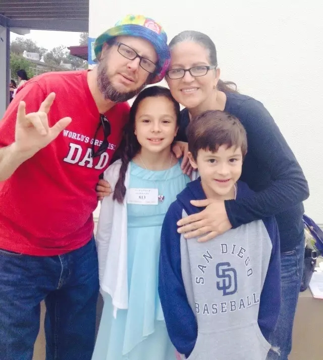
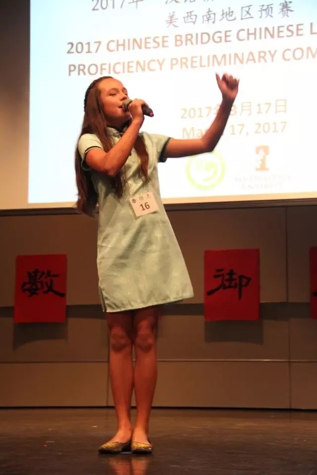

每日一篇——教师感悟/ 康可米：来自聋哑人家庭的“汉语桥”小冠军 【下/ 康可米的故事】
 642
642
为了今天的第一，康可米和她的父母、老师都付出了很多、很多。来自厦门大学的汉语教师王昕是康可米的辅导老师，熟悉这位美国“学霸”生活学习的点点滴滴，为我们介绍了第一名成功背后的故事。
康可米的家庭背景
康可米和她的弟弟都是河景小学中文沉浸课堂的学生，他们姐弟二人都多次在大赛中取得过优异的成绩。但康可米不是来自富裕的家庭，很偶然的机会我发现康可米的父母双方双双都是聋哑人。这样的家庭环境能走出来如此优秀的、会讲流利中文的孩子貌似天方夜谭。但事实是，康可米特殊的家庭背景更打造出她阳光自信、自强不息、顽强拼搏的意志和品格。
很多有残障父母的孩子表现多为自卑，或者是对逆境的无奈，甚至逃避现状、或者反叛。但恰恰相反，康可米孝顺父母、尊敬长辈、团结同学，她自信、豁达，充满爱心和信心。
有一次上中文课，老师让同学们做一个小的课堂活动—-自己做礼券赠给父母，表达自己对家人的关爱。在同学们都在七嘴八舌，纷纷议论小朋友怎么能做礼券时，一直专心听课的康可米问王老师：“老师，我可以做两张礼券吗？一张送给妈妈，我要帮助妈妈每周刷四天碗，还有一张是送给爸爸，我要帮助爸爸每周洗一次车，礼券有效期限都是一年。”透过康可米娟秀的汉字书写，准确的词句表达，王老师仿佛看到了这个特殊家庭女儿对父母的忱忱孝心。
王老师对他们的父母了解应该是在“汉语桥”大赛准备的这一个月。康可米主动找王老师来给她辅导，写稿子，准备各种文化智力问答题，并为她设计才艺展示的内容。王老师发现她的父母把老师们的问答题题库做成可以随时练习复习的卡片，卡片的一面是提问，另一面是答案。康可米说，“我爸爸妈妈喜欢计划，提早做好各种准备。”我不禁为这对特殊的父母点赞，他们的点子既高效又恰到好处。
孩子在游戏中不断练习，不断提升，不断改进。每天复习40个卡片，从最初的第一周错误10个，康可米逐渐进步，对中国基本文化文字知识掌握地越来越纯熟，到最后可以脱口而出，这样飞速的进步和父母的支持和付出是密不可分的。
康可米的才艺环节是对歌曲《感恩的心》大意的手语展示。当王老师把找到的视频内容邮件发给康可米的父母后，她父母第二天回复王老师，把视频剪辑成了符合大赛时长要求的视频。王老师知道康可米的父母虽是残障人士，但他们却是最好的教育家。
他们懂得，真正地爱孩子不是买来玩具或是食品，更不是把孩子简单粗暴地丢给手机等电子保姆，他们为孩子在努力拼搏奋斗的路上树立了自强不息、勇于进取的榜样。康可米告诉老师：“我爸爸妈妈花了很长时间帮我剪切视频，这个做起来真的很难啊。但他们做得非常好，我爱我的爸爸妈妈……”

康可米一家
康可米的汉语天赋
几乎每个听过康可米讲中文的人都会惊诧她的发音和语调，因为她讲的中文字正腔圆，几乎可以和本土的中国人相比。莫非她真的有过人的中文天赋？
其实真正的原因是，她上课的专注和投入几乎是达到了忘我的境地。
康可米上课时爱表现，很“嗨”，体现在她在所有课上，包括中文课、历史课、数学课、体育课、手工文化课等所有的课上，都时时刻刻争取用中文表达。如果她的发音不够准确，她会多次、十几次、甚至几十次地练习，直至要求自己的发音和光盘的发音相一致。经过多年的沉浸式学习，她的中文发音流利而准确。而且如果上课时老师使用了“幼稚园”、“叻渋”这样的港台用语，她会认真地更正老师，要讲“幼儿园”、“垃圾”。
2016年河景小学欢庆万圣节时，小朋友都扮成各种自己喜欢的装扮，康可米那天的装扮老师没有看懂，王老师问她，“今天你扮成谁了？”她微微一笑，回答也很飘逸——”我扮成我自己，一个书呆子。”
“梅花香自苦寒来”只能代表康可米成绩的一个方面，事实上她对中文学习的热情是发乎于内心。在距离预赛还有一个星期时，她的演讲稿背诵得还有一些不熟，经常会出现这样或那样的问题。王老师说，“康可米，你周末回家一定要不断地复习背诵啊！”周一她来找王老师辅导时，明显有了进步。
王老师说，你周末背诵演讲稿了吗？”她笑眯眯地看着王老师说，“我周六背了5遍，周日背了6遍。从这周一开始，我每天会比前一天多背诵一遍……”王老师问康可米，“背诵这么多遍你累不累？”康可米倔强的小脸上挂满了笑容，“不会累啊，我太喜欢学习中文了。我觉得很有意思。别人不爱背中文，因为他们不喜欢学，只是他们的爸爸妈妈逼着他们学中文。我和弟弟学中文都很开心。”看到、听到这一切，王老师被康可米的热情和执著深深地感动。
作为辅导老师，王老师开始反省自己，原来认为美国“熊孩子”上课时就是嬉笑、打闹；美国的中小学教育，尤其是小学阶段都是放羊，美国老师的评语都是溢美之词……自己对美国教育的认识太过于狭隘和片面，这个“学霸”女孩给王老师上了最难忘的一课……

比赛中的康可米
康可米的坚强后盾
河景国际小学在2016年刚刚被评为全球优秀孔子课堂，这是全美国唯一一所获此殊荣的小学孔子课堂，沉浸式汉语课堂远近闻名。河景国际小学的每个孔院老师都在自己的岗位上做了大量的工作，付出了常人难以想象的努力。比赛结果是平常努力的反映，这次汉语桥比赛小学组设的8个奖项中，河景国际小学的学生抱回包括第一名在内的4个奖项。
每天除了做好正常的教学工作、课堂管理，所有孔院老师都要利用大量的课外时间辅导参赛选手。他们加班工作，不仅帮助学生提升汉语水平，而且通过不断鼓励和交流，成为孩子喜欢和信赖的朋友。康可米的演讲稿几易其稿，每一稿都要师生之间不断地沟通交流，找到最合适的主题和表达词句。
同时，在准备过程中，康可米也会有心理上的波动，大赛前的一天，辅导完比赛内容，康可米说：“王老师，我现在又紧张又激动。”王老师知道，这个自强又自信的女孩在这么多天高强度、高压力的准备过程中，尤其需要老师的心理疏导和鼓励。王老师看着她，告诉她，“康可米，你现在的紧张兴奋就是比赛前的最高境界了。你看到那么多观众。你知道他们为什么来吗？ 那么多观众都是特意为你加油来的，他们都知道你是最棒的，他们知道你会给他们最精彩的展示。那些观众不是你的敌人，而是你最好的朋友。这样你再看到他们， 你还会紧张吗？”她的回答充满自信，“不会了！”
孩子们今天的成绩，是日积月累的结果。孔院老师教孩子学习汉语汉字，也通过包饺子、写福字，包红包等各种不同的文化手工活动让孩子们沉浸在优美丰富的中国文化中，学在其中，乐在其中。
王老师见证了康可米——一个来自残疾人家庭的美国女孩的汉语学习之路，祝贺康可米取得的可喜成绩。正如康可米演讲中所言，“我热爱汉语，我非常想到中国去，和好朋友一起聊天、一起自拍、一起学习、一起体验中国的生活”。祝愿康康可米能够早日实现自己的愿望，做她最开心的事——到中国学习中文！
值得一提的是，比赛的现场，组织方专门请了手语翻译，让康可米的父母亲能感受现场比赛的内容。现场先把中文实时翻译成英语，再由当地手语翻译翻译给聋人父母。比赛组织方的周密安排让康可米的父母充满激动、感激。
作者简介：
王昕：圣地亚哥州立大学孔子学院河景国际小学孔子课堂汉语教师。